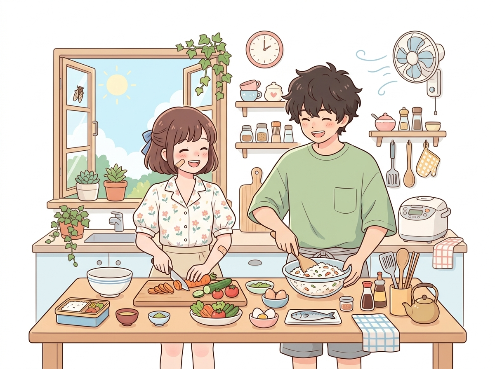
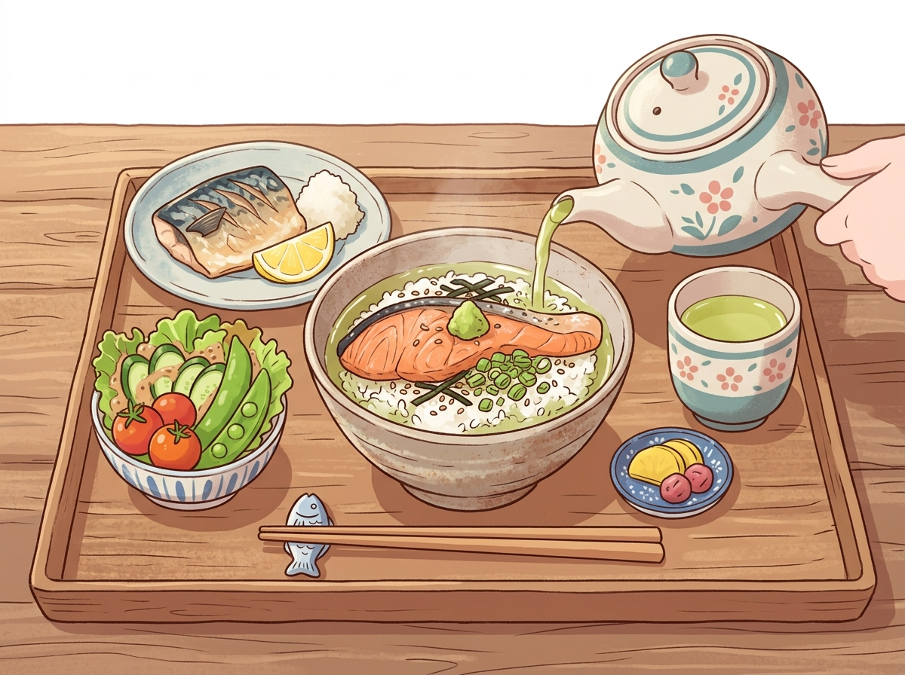
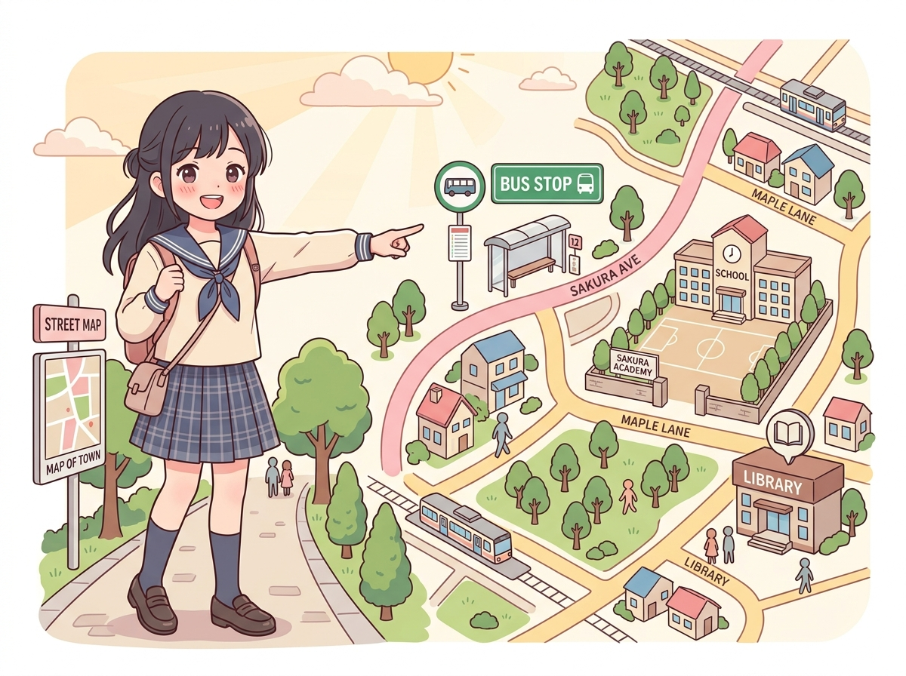

ミニ多読
昼ごはんとお茶漬け
閱讀練習 · Mini Tadoku · 会話 · 2026 / 07 / 29
暑い日に家で昼ごはんを作る話 — 一個場景一張圖，先看圖猜情境，再讀日文
速度
0.8x

Ａ
今日
きょう
はとても
暑
あつ
いですね。
Kyou wa totemo atsui desu ne.
今天非常熱呢。
▶
Ｂ
ですから、
家
うち
で
昼
ひる
ごはんを
作
つく
りました。
二人
ふたり
でいっしょに
作
つく
りました。
Desukara, ie de hirugohan o tsukurimashita. Futari de issho ni tsukurimashita.
所以，在家裡做了午餐。兩個人一起做了。
▶

Ａ
何
なに
を
作
つく
りましたか。
Nani o tsukurimashita ka.
做了什麼呢？
▶
Ｂ
野菜
やさい
と
魚
さかな
とごはんを
食
た
べました。お
茶漬
ちゃづ
けが
好
す
きです。かんたんです。
Yasai to sakana to gohan o tabemashita. Ochazuke ga suki desu. Kantan desu.
吃了蔬菜、魚和白飯。我喜歡茶泡飯，做法很簡單。
▶

Ａ
バス
停
てい
はどこですか。
Basutei wa doko desu ka.
公車站是在哪裡呢？
▶
Ｂ
バス
停
てい
はここです。
学校
がっこう
はそこです。
図書館
としょかん
はあそこです。
Basutei wa koko desu. Gakkou wa soko desu. Toshokan wa asoko desu.
公車站是在這裡。學校是在那裡。圖書館是在那裡（遠處）。
▶
— Return to List —
多読故事清單
→
查看所有自製迷你多読小故事
插圖與素材出處：請參閱
素材與出處說明 (Credits)